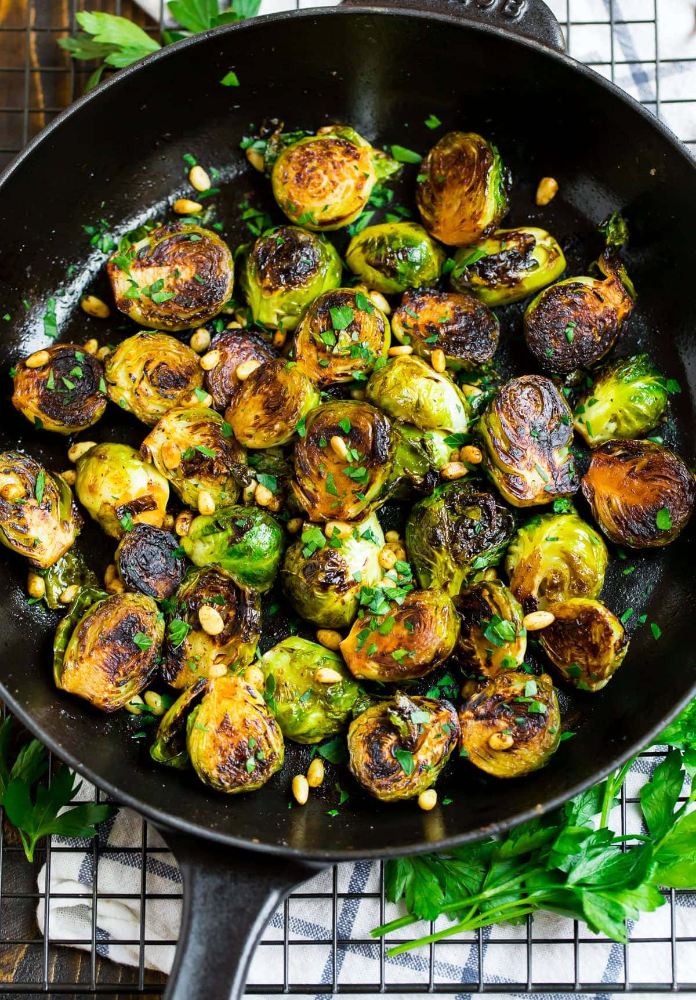

Brussle Sprouts
The Best Brussle Sprouts

These beautifully roasted brussel sprouts taaste devine. I think everyone should try them at least once in their life.
Here are a list of ingredients you will need:
- Brussel Sprouts(duhh)
- Garlic
- Onion Salt
- Pepper
- Olive Oil
Here is the recipe, step by step:
- Drizzle some olive oil in a pan
- Toss the brussel sprouts on the pan
- Put your seasoning of garlic and onoin salt and pepper on top
- Drizzle someo more olive oil on top
- toss in the oven for 20 minutes
And Viola! Your food ready for enjoyment!